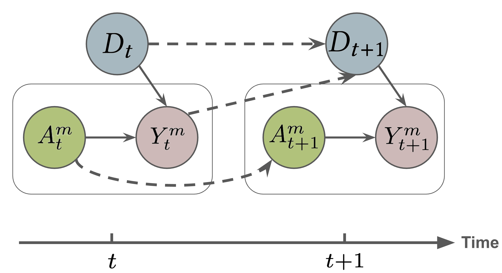
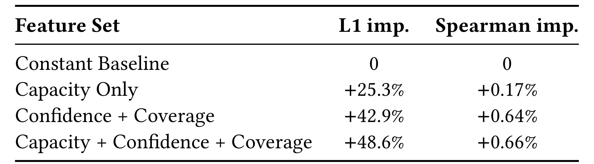
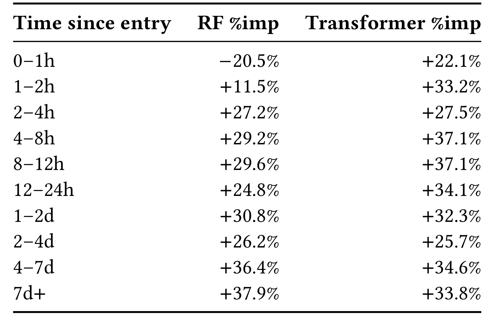

Impression Share Prediction：排序系统的曝光份额预测
这篇论文由 Meta Platforms 的 Mohsen Malmir 等人完成，发表于 RecSys 2026，研究对象是排序模型进入在线 A/B 测试后会怎样改变不同优化目标之间的曝光分配。唯一论文入口为 arXiv:2608.16872。论文把这一问题命名为 impression share prediction，并给出结构因果解释、两类统计预测器以及来自 Meta 内部排序系统的回顾性实验。本轮没有核验到独立公开代码或数据集，因此下文把可复现判断严格限定在论文披露的方法与结果范围内。
标准离线准确率只是下游效用的代理：候选模型的分数进入共享拍卖、投放容量和 pacing 控制器后，即使准确率提高，也可能把曝光从高价值目标桶重新分配到低价值目标桶；而现有离线评估在 A/B 测试前看不到这种份额迁移。
1. 背景和问题
排序系统常把一次曝光归入某个优化目标，例如点击、转化或视频播放。论文称这些类别为 objective buckets。不同桶的单次曝光并不具有相同业务价值：一个桶获得更多曝光，可能意味着另一个桶在共享资源约束下失去曝光。因此，模型的离线 NE、RIG、AUROC 或 GAUC 变好，并不自动推出系统层面的效用变好。常见离线指标是在既有日志曝光上检查预测是否更准；真正上线时，分数分布还会改变拍卖胜出关系，pacing 又会根据剩余容量调整资格或倍率，最后形成新的曝光组成。这里的缺口不是“离线指标有噪声”这么简单，而是它测量的对象和线上关心的对象不同：前者主要是固定曝光上的逐样本准确率，后者还包含资源竞争后的组成变化。
论文特别强调并行 A/B 测试中的共享容量。一个实验臂替换某个候选排序模型，但仍与覆盖其他目标桶的 incumbent models 共同运行；不同实验臂服务的曝光会消耗同一批 campaign delivery capacity。容量由 campaign 层外部设定，pacing 系统持续把它消耗到不同目标桶。这意味着实验臂不是彼此完全隔离的“小世界”：候选模型改变某桶的胜出概率后，会改变共享容量的消耗轨迹，新的容量状态又反过来影响下一时刻所有桶的可投放性。曝光份额因此是模型、拍卖、容量与时间反馈共同产生的系统级结果，不能只看候选模型本身的分类性能。
曝光份额还补充了逐请求指标看不见的组成效应。假设候选只把少量曝光从点击桶移向视频播放桶，整体 AUROC 可能几乎不动，甚至因样本占比更大的桶变准而上升；但只要两个桶的单位曝光产出不同，系统总结果就会变化。反过来，份额移动也不一定是损害：若新增曝光进入受限但高回报的目标，它可能是正向调整。于是评估任务的第一步不是给份额变化贴好坏标签，而是先把“会移多少、移到哪里”预测出来，再由业务效用与约束解释。这个分层避免把准确率、资源分配和价值判断混为一谈。
已有研究分别处理过几个相邻问题。无偏 learning-to-rank、反事实风险最小化和 off-policy evaluation 主要估计固定日志分布下的新策略收益，需要重叠性、平稳性或倾向校正等条件；拍卖与 pacing 研究会刻画预算均衡和跨实验干扰，却通常不直接预测某个具体新排序器将带来的目标桶份额；offline-to-online gap 研究则揭示局部 rollout 或适应过程可能误导最终效果。本文把这些线索收束为一个新的辅助评估任务：给定候选模型状态和当前系统容量状态，预测未来窗口中各目标桶的归一化曝光份额。它不试图替代 reward-based offline evaluation，而是补充一个当前指标缺失的“分配行为”视角。
这个任务天然带有反事实含义。真正还没进入系统的候选模型尚未消耗容量，pacing 也没有适应它，系统日志只反映 incumbent 或旧候选留下的均衡。研究者想问的是：如果在当前状态下把候选模型放进去，未来 24 小时的曝光组成会是什么。问题的困难来自两个层面。第一，候选模型的分数分布与覆盖目标要作为可替换的 treatment 描述；第二，当前容量不是静态背景，它由此前曝光累积而成，并会在预测窗口里继续被新的曝光改变。若逐分钟模拟所有中间状态，误差会不断传播；若只做一个起点快照预测，又可能忽视系统刚换模型时尚未适应的短期动态。
需要把论文的“offline evaluation task”与其实验口径分开理解。概念目标确实是 A/B 之前预测新模型的份额，但作者明确承认，理想的候选置信度应由完全离线评估产生，真实 pre-entry 结果本身也不可观察。本文实证中，候选状态使用其最早在线 serving 的滚动分数信号估计，所谓 0–1h pre-entry 结果使用候选首次出现后一小时的观测曝光份额做代理。也就是说，实验验证的是 early-entry forecasting 对纯离线预评估的近似，不是“新模型零流量、完全没有在线信号”时已经被证明可用。这条边界决定了怎样解读最亮眼的 +22.1%：它说明近期容量历史能够改善最早上线阶段的预测，却还没有闭合真实零流量评估的证据链。
从推荐系统工程角度看，这个任务最适合充当上线闸门中的诊断量，而不是新的单一决策指标。它可以提示候选模型是否可能把份额大幅推向某些目标桶，帮助团队在开流量前选择 guardrail、分层监控和实验时长；但份额迁移本身没有正负号，必须结合每个桶的转化率、收益、约束和公平目标解释。论文也没有把份额预测再映射为总 utility，因此“预测得准”不等于“知道哪个模型更好”。其贡献在于把过去只能上线后观察的系统级结果，先转化成一个可以量化误差、比较模型和检查冷启动失效的研究对象。
2. 方法
2.1 从目标桶到 24 小时份额向量
论文先把输出定义为一个组成向量。系统共有 (C) 个目标桶，候选模型 (m) 可能只覆盖其中一部分；预测器输出每个桶在未来窗口中的曝光比例，而不是曝光绝对量。归一化约束把输出限制在概率单纯形上：
符号解释：(m) 是候选排序模型，(C) 是目标桶数量，(c) 是桶索引，(\hat{Y}^{m}_{c}) 是模型 (m) 对桶 (c) 的预测曝光份额；(\Delta^{C-1}) 要求所有分量非负且总和为 1。这个定义把不同总流量规模下的系统状态放到可比较空间，但也意味着模型只回答“份额如何分”，不回答“总曝光是否增长”。如果全局供给或需求同时变化，份额稳定并不能保证绝对曝光稳定。
评估起点记为 (t=0)，预测窗口终点为 (T)，实验固定 (T=24\mathrm h)。输入被分为两组。模型状态 (A_0^m) 描述候选的内生打分行为，落地为 20 个对数尺度分桶组成的分数直方图，加分数均值和方差，共 22 维；覆盖向量 (V^m\in{0,1}^{C}) 指明候选可以为哪些目标桶打分。系统状态 (D_0) 对每个桶提供五类容量特征：总容量、已消耗容量、剩余容量、pacing multiplier 和 active campaigns 数量，因此是 (5C) 维。置信度分布与覆盖关系描述“候选会怎样竞争”，容量状态描述“当前还允许怎样投放”，两者合起来才对应份额生成机制。
2.2 结构因果模型与可识别性
结构因果模型每个时刻包含三类变量：(A_t^m) 是候选模型状态，(Y_t^m) 是实际曝光份额，(D_t) 是所有 A/B 臂共享的投放容量。图中的当期实线表示 (A_t^m\rightarrow Y_t^m) 与 (D_t\rightarrow Y_t^m)：候选分数决定拍卖竞争力，容量与 pacing 决定是否有资格交付。跨期虚线表示 (Y_t^m\rightarrow D_{t+1}) 与 (D_t\rightarrow D_{t+1})：当期曝光消耗共享容量，而未耗尽的部分继续进入下一时刻。(A_t^m\rightarrow A_{t+1}^m) 表示架构和训练固定后，模型分数状态具有自相关。

Figure 1 最值得看的不是箭头多，而是没有哪条箭头。作者假设 (D_t\not\rightarrow A_t^m)：模型的内在分数分布与校准由架构和训练数据决定，不由当期容量状态生成。左、右两个圆角框分别表示 (t) 和 (t+1) 的当期关系；绿色 (A) 经实线影响粉色 (Y)，蓝色 (D) 同时约束 (Y)，而 (Y_t^m) 和 (D_t) 的虚线共同进入下一期容量。时间轴清楚显示，共享容量既是起点条件，也是由历史分配累积的状态。缺失的 (D_t\rightarrow A_t^m) 边让作者声称 treatment 到 outcome 不存在需要额外封闭的 backdoor path；但工程实现用在线滚动置信度近似 (A_0^m) 时，这个“内生模型状态”与实际日志估计量是否完全一致，正是必须复查的识别风险。
在上述结构假设下，固定容量状态后，对候选模型状态做干预的分布可以由观察条件分布识别：
符号解释：(do(A_t^m=a)) 表示把候选模型状态外部设为 (a)，而不是被系统中其他变量自然产生；(Y_t^m) 是同一时刻的份额结果，(D_t) 是共享容量条件。等式右侧允许用历史观察样本训练普通预测器，不需要逆倾向加权、平衡表示或 domain-adversarial correction。这个结论的力量和脆弱点来自同一个地方：它不是靠更复杂的估计器消除混杂，而是靠业务结构断言容量不会反向塑造模型状态。如果滚动分数窗口受到实际获得的流量组成、样本选择或在线校准影响，实测特征就可能偏离理论中的 intrinsic state，识别式不会自动保护预测器。
2.3 快照森林与容量历史条件编码器
预测框架不显式递推 24 小时内所有 (A_t^m,D_t,Y_t^m)，而是直接从起点输入映射到终点聚合份额：
符号解释：(A_0^m) 是评估时刻的候选分数与覆盖状态，(D_0) 是当前容量状态，(Y_T^m) 是从 0 到 (T) 的聚合曝光份额。直接映射把中间拍卖与 pacing 动态隐式交给历史数据学习，避免逐步 rollout 的复合误差；代价是无法输出一条可解释的未来状态轨迹，也不能在环境发生训练数据中未见的机制变化时保证外推。
第一类预测器是 Random Forest。它把 (A_0^m,D_0,V^m) 拼成单个快照，对每个份额分量独立回归；推理后裁掉负值并重新归一化到单纯形。训练时没有显式时序编码，推理时也只读取 (t=0) 的统计量。独立逐桶预测易于训练并能给出特征组消融，但桶之间的竞争只在最后的归一化步骤间接体现，模型不能显式学习“某桶上升迫使另一桶下降”的联合几何。对于训练期出现过的模型，快照里已经积累了与该模型一致的容量和平滑置信度，这一简单方案仍然很强；换成刚出现的留出模型时，(D_0) 还主要代表上一模型形成的均衡，它就会遭遇明显的状态错配。
第二类预测器用 PatchTST 风格编码器处理最近两小时、分钟粒度的容量历史。序列按 15 分钟切成 8 个 patch token，经 2 层、4 个注意力头、(d_{model}=64) 的 Transformer 与 GELU，再做 mean pooling 得到 (h_t\in\mathbb R^{64})。条件 MLP 将 (h_t) 与候选模型状态 (A_0^m) 合并，通过两个隐藏层和 softmax 输出份额向量。关键机制是把“最近容量如何走到当前点”编码为系统上下文，同时把可替换的候选状态保留为独立条件输入；推理时可以固定同一 (h_t)，交换不同候选状态，读取相应份额预测。
论文称编码器在最近两小时动态上“模拟短 rollout”，但从计算方向看，它读取的是评估点之前的 look-back history，不是从 0 向未来 24 小时逐步生成容量轨迹。训练采用 AdamW 和 KL divergence。按论文文字说明可写成标准组成分布损失：
符号解释：(Y_T^m) 是真实份额分布，(\hat{Y}T^m) 是 softmax 输出，(D) 衡量两种组成分布的偏离，(c) 遍历目标桶。论文正文只写明使用 KL loss，没有为这一标准展开式编号。训练时历史编码器与条件头端到端更新；推理仍需要候选置信度和近期容量序列。若某真实桶份额极小或新桶从未出现，KL 的方向与数值稳定处理会影响梯度，但五页正文没有披露平滑常数、树数量、MLP 宽度或超参数搜索范围，复现时不能自行假定。
3. 实验结果
3.1 数据、切分、基线与指标
数据来自一个内部排序系统约五周的运行记录，覆盖 150 个候选模型和多个模型家族，共约 180 万个分钟级 auction statistics 与 impression-share snapshots。作者用固定时间点做时序切分：23 天训练、15 天测试。测试窗口共有 103 个活跃模型，其中 83 个在训练期也出现过，归为 seen；另有 20 个训练期从未出现，归为 unseen。这个划分比随机切分更接近上线情形，因为留出模型身份和更晚的系统状态不会直接泄漏到训练集，但它仍然来自同一内部系统和相邻数周，不能当作跨平台泛化。
常数基线对每个测试实例都输出训练集平均份额向量。主指标是预测组成与观测组成的 L1 距离：
符号解释：(\hat{Y}{t,c}^m) 与 (Y^m) 分别是模型 (m) 在桶 (c) 上的预测与观测份额，逐桶绝对差求和，越小越好。表中“%imp”不是 L1 的绝对数值，而是相对常数基线的误差改善，正数更好、负数更差。次指标 Spearman 比较预测与真实桶排序，越高越好。作者强调 L1 更关键，因为桶次序大体稳定时，微小份额移动仍会改变不同转化价值桶获得的曝光量。
实验没有报告每个桶的名称、(C) 的具体值、份额长尾分布、置信区间或统计检验，也没有给出绝对 L1。只报告相对改善便于比较模型，却难以判断 +48.6% 对应的实际份额误差是否足够小，更不能直接换算为业务 utility。数据量看似很大，但分钟快照高度时序相关，有效独立样本数远小于 180 万；论文未说明按 campaign、实验或模型聚类后的不确定性，因此数值更适合作为方法可行性证据，而非部署收益承诺。
3.2 已见模型：特征组贡献
seen-model 实验对应 post-entry：测试模型已在训练期出现，也已经与线上系统交互，容量和滚动置信度对其行为有一定适应。作者比较三种 Random Forest 特征配置与常数基线，统一预测后续 24 小时份额。这个设置回答两个问题：任务在输入分布较稳定时是否可预测，以及模型状态、覆盖关系和容量状态各自贡献多少。

Table 1 显示，仅用 capacity features 时，L1 相对基线改善 25.3%；只用 confidence 与 coverage 已达到 42.9%；把三组特征全部合并后为 48.6%。因此在 seen/post-entry 条件下，候选模型的分数分布与可覆盖目标桶提供了多数信息，容量再补上约 5.7 个百分点的相对改善。这个结果符合拍卖直觉：即使两个模型 AUROC 相近，只要分数直方图和校准不同，它们越过竞价或 eligibility 阈值的频率就可能不同。与此同时，不能据此说容量不重要；共享容量是结果生成的结构条件，只是在已适应状态下，其快照的新增统计预测量小于候选分数特征。
Spearman 的改善只有 +0.17%、+0.64% 和 +0.66%，明显小于 L1 的相对变化。论文解释为目标桶的优先级次序受到 campaign mix 与容量结构约束，跨模型版本本来就很稳定，排名相关接近饱和。换言之，模型的难点不是猜出“哪个桶通常第一”，而是猜准每个桶的具体份额移动。常数基线已能复用总体排序，Spearman 因而产生天花板效应；L1 对一两个百分点的组成偏移更敏感，更贴近论文要发现的系统风险。
这组实验既是主结果也是消融，但证据范围有限。20-bin 对数分数直方图加均值方差可能已经编码模型家族特征；seen 模型在训练和测试都出现，Random Forest 也可能学习模型特定的稳定模式。全特征 +48.6% 证明“对同一批模型的未来份额可以比历史均值预测得更好”，并不证明对一个从未上线、分数尺度也未知的新架构同样有效。真正考验 offline-to-online gap 的是下一组按模型身份与上线时长共同切分的实验。
3.3 留出模型：最早在线代理窗口最难
held-out 实验先把 20 个新模型整体从训练期排除，再按它们第一次出现后的时间分桶。时间分桶很重要：同一个 unseen 模型在上线一小时和上线五天时虽然身份都没见过，但输入状态已经不同。上线越久，容量消耗和 pacing 越充分吸收候选模型的足迹，滚动置信度窗口也越完整；此时“未知模型”通过系统状态泄露出越来越多可预测信号。第一小时最接近作者希望模拟的 pre-entry 情形，因为 (D_0) 主要仍反映旧模型均衡，候选的滚动窗口尚未填满。
这里必须再次收紧表述：0–1h 不是零流量纯离线测试，而是 pre-entry surrogate。输入中的候选置信度来自最早在线 serving，监督目标也是第一次出现后首小时实际观测的份额。论文说系统在这一小时尚未“measurably adapted”，这是经验代理假设，不等于候选完全没有影响容量，也不等于离线日志已经包含真实反事实。作者在结论中明确承认，最准确的做法应从离线评估计算候选置信度，本文尚未验证离线置信度与在线滚动置信度的偏差。

Table 2 把这一边界转化为清晰的时间曲线。0–1h 时，快照 Random Forest 相对常数基线为 −20.5%，说明错误容量均衡与不完整置信度会让学习器比“永远报训练平均份额”更差；条件 Transformer 为 +22.1%，两者形成 42.6 个百分点的差距。1–2h 时二者分别为 +11.5% 与 +33.2%，2–4h 几乎相当，为 +27.2% 与 +27.5%。4–8h、8–12h 和 12–24h，Transformer 分别达到 +37.1%、+37.1%、+34.1%，仍高于 RF 的 +29.2%、+29.6%、+24.8%。这支持近期容量轨迹能在系统尚未稳定时补充单点快照，尤其避免把旧均衡误认为新候选的状态。
时间超过一天后差距收窄：1–2d 是 +30.8% 对 +32.3%；2–4d 起 RF 以 +26.2% 略高于 Transformer 的 +25.7%，4–7d 为 +36.4% 对 +34.6%，7d+ 为 +37.9% 对 +33.8%。论文据此判断，系统充分适应后，瞬时特征已足够，额外时序编码不再占优。这个交叉也说明 Transformer 的收益不是来自“模型永远更大更强”，而是对状态错配阶段更有针对性；如果工程系统可以根据上线时长选择预测器，早期使用容量历史编码，稳定期切换快照模型，可能比全程固定一种模型更经济。不过论文没有报告切换策略、推理成本或误差校准，当前只能作为后续设计假设。
Table 2 省略 Spearman，因为所有时间桶都高于 0.98。这再次表明桶排序几乎是常量，困难集中在份额幅度。对风控而言，0–1h 的 42.6 个百分点 swing 很醒目，但不能把“相对常数基线的 L1 改善”说成份额预测准确率提高 42.6%，更不能说线上效用提高 42.6%。表中没有绝对误差，也没有下游转化或收入，因此它只能证明两种预测器在代理任务中的相对关系。
3.4 证据缺口、鲁棒性与可部署性
论文用一个短篇幅完成任务提出、因果图和两组实验，很多工业验证问题尚未展开。首先，没有公开桶级结果，无法判断改善是否集中在大份额桶，还是也覆盖业务更敏感的小份额高价值桶。L1 对所有桶线性加总，若某个高价值小桶偏差很大、多个普通桶偏差很小，总指标可能掩盖风险。更完整的评估应同时报告最大桶误差、按 utility 加权误差、组成校准曲线与置信区间。
其次，数据来自单一内部系统、约五周和有限模型家族。训练/测试虽按时间切分，但共享 campaign mix、节假日结构、拍卖规则和 pacing 实现可能让分布比跨市场部署稳定。论文没有跨地域、跨广告形态、跨目标集合或大规模机制变更测试，也没有分析新桶出现、覆盖向量突变和容量冲击。因果识别依赖 (D_t\not\rightarrow A_t^m)，而实现特征却来自最早在线滚动窗口；如果获得什么样的流量会改变被观测的分数分布，这个代理会带来选择效应。
再次，系统和效率证据缺失。Random Forest 的树数量、深度和 serving 延迟未披露；Transformer 虽只有 2 层、4 头、64 维，但要读取两小时分钟序列，数据新鲜度、缺失点和多桶维度都会影响吞吐。论文也未报告训练时间、内存、p99 延迟或与现有离线流水线集成的成本。没有开源代码与数据，读者无法核验数据清洗、份额聚合、时间窗口对齐、KL 数值处理和模型选择过程。
最后，论文没有把份额预测接到真正的决策规则。一个候选可能准确率变好且把份额移向低效用桶，也可能主动把份额移向稀缺但高效用桶；仅凭变化大小无法判断是否应阻止上线。可部署系统至少需要预先定义桶级容忍区间、utility 权重和不确定性阈值，并把预测当作 A/B 风险分层输入。本文最坚实的实验结论是：seen 模型的份额具有可预测性，而留出模型最早在线阶段存在状态错配，近期容量历史能明显缓解这个代理窗口的误差；它还没有证明真正的 pre-entry 纯离线预测已经达到可放行水平。
4. 总结
4.1 我的判断
本文最有价值之处，是把“离线指标好但系统分配可能变坏”从经验警告变成明确的监督学习任务。曝光份额向量既比单点 accuracy 更接近拍卖与 pacing 的系统行为，又比直接预测长期 utility 更容易得到密集监督。因果 DAG 也迫使工程团队把候选内生状态、共享容量和跨期反馈分开讨论。seen 模型全特征 RF 的 +48.6% L1 改善说明任务并非不可预测；0–1h 中 RF 的 −20.5% 与条件 Transformer 的 +22.1% 则准确暴露了新模型刚进入系统时的状态错配。
但论文标题中的“offline”更像研究目标，而不是当前实验证明的完成态。实证仍依赖候选最早在线 serving 信号和首小时观测份额；把它描述成无需任何候选流量的纯离线预测，会越过论文自己的限制。因此我会把这个方案定位为 early-entry 风险预报器与未来 pre-entry 评估器的原型，而不会直接替换 A/B 测试或 reward-based OPE。
4.2 工程启发与复现建议
复现时应先构造时间一致的数据表：每个评估点只允许读取该点以前的容量历史，24 小时标签必须来自之后的窗口，模型身份切分和时间切分同时执行，避免 rolling feature 泄漏。其次要把份额向量、覆盖向量和容量单位固定下来，核对每行份额和为 1，并分别实现训练均值基线、逐桶 RF 加单纯形投影、PatchTST 条件头。报告结果时除相对改善，还应给绝对 L1、桶级误差和 bootstrap 区间。
上线闸门可以采用“双阶段”思路：候选尚未开流量时，从离线 replay 生成与线上同口径的 score histogram，结合 incumbent 形成的当前容量历史输出初始风险；开放极小流量后，再用早期真实信号校正。前者才是真正检验论文愿景的环节，后者对应本文已有代理证据。预测输出不应直接判好坏，而应与桶级 utility、容量 guardrail 和允许迁移区间结合；对高价值小桶可增加最大绝对误差或加权 L1，防止总体指标掩盖危险偏移。
4.3 局限与后续跟进
需要保留至少四项局限。第一，真实 pre-entry 结果不可观察，0–1h 代理包含候选在线信号，离线与在线置信度偏差尚未测量。第二，单一内部系统、约五周和 150 个模型限制了跨平台外推，分钟快照的相关性也削弱名义样本量。第三，因果识别依赖容量不反向决定模型内生状态；滚动日志特征若受曝光选择影响，理论变量与观测代理会错位。第四，论文只给相对 L1 与近饱和 Spearman，没有绝对误差、置信区间、桶级 utility、延迟和资源成本。第五，直接 0→24h 映射没有显式传播中间状态与不确定性，遇到机制突变时很难解释失败。
后续最值得跟进三条线。其一，构造完全离线的候选 confidence features，并在同一模型上量化它与最早在线滚动特征的分布差异；这决定方法能否从 early-entry 真正跨到 pre-entry。其二，开发带不确定性传播的 sequential 或 Bayesian rollout，比较直接预测与逐步状态更新在容量冲击下的校准；这能暴露 24 小时内复合误差，而不仅给终点均值。其三，把份额预测接到 utility-aware guardrail，在匿名化或合成拍卖环境中测试“预测偏移—限制开流量—最终效用”的闭环；只有这一步完成，曝光份额才从诊断指标变成可验证的上线决策工具。另应补做跨模型族、跨时段和新目标桶鲁棒性，并报告错误集中在哪些桶，以免总体 L1 掩盖真正的业务风险。